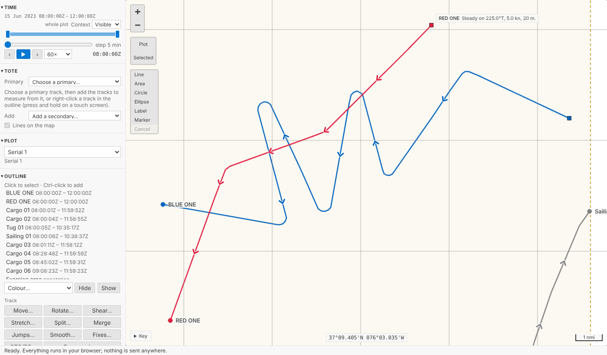
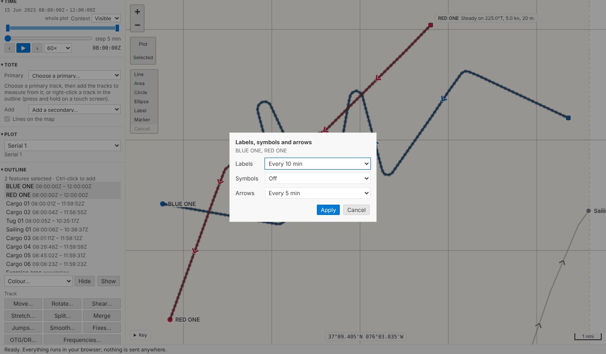
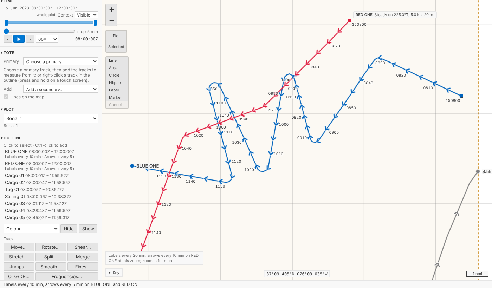
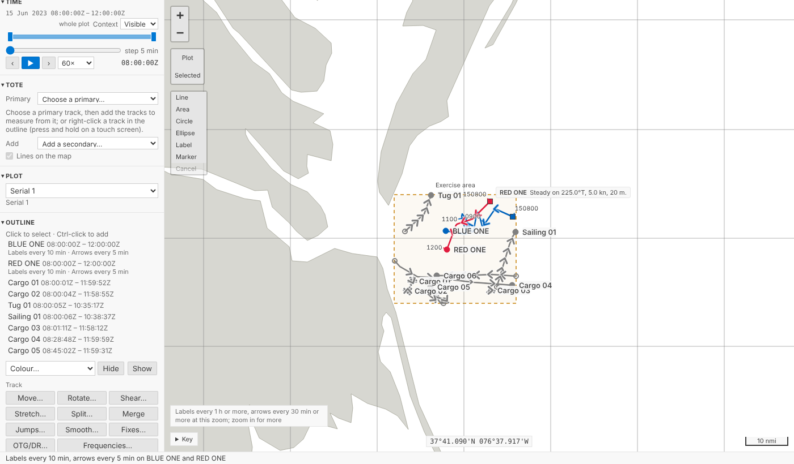
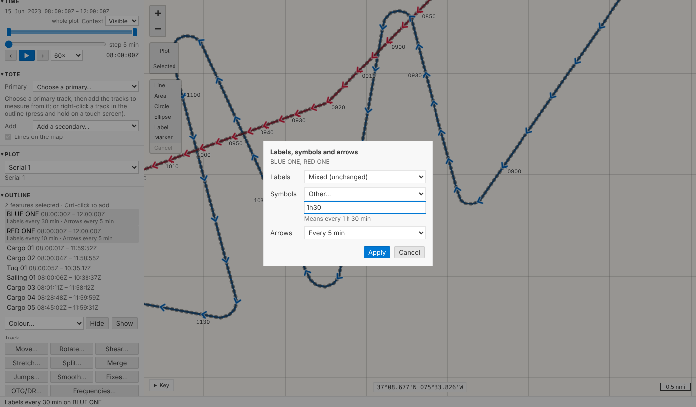
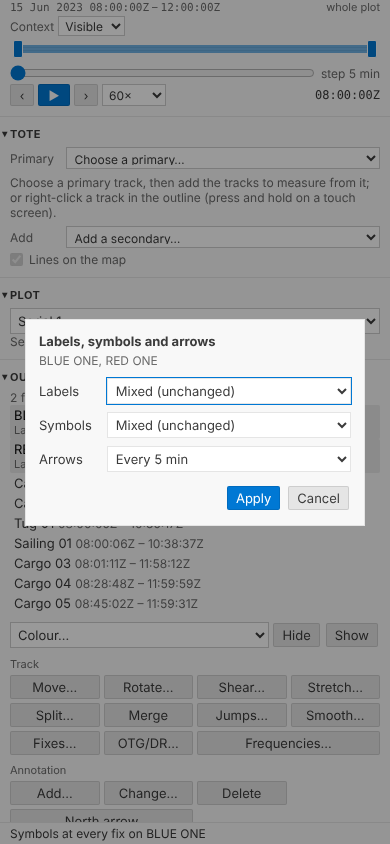
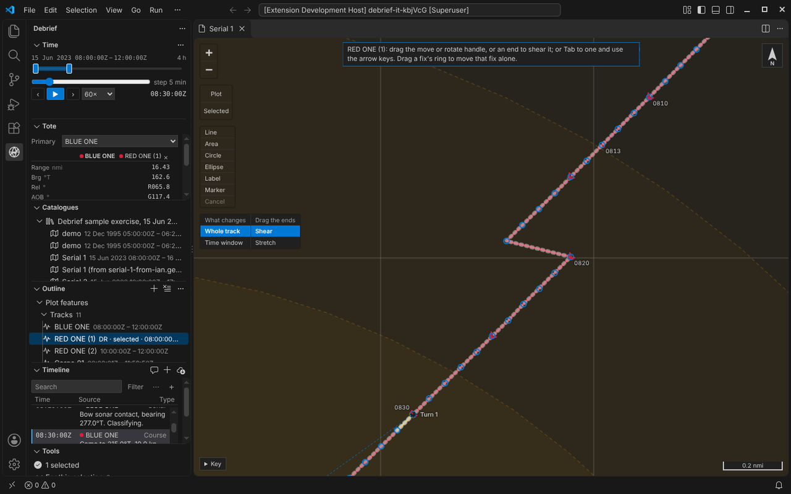

Labels, symbols and arrows¶
A track on a chart is more use with the times written along it. Legacy Debrief let you label a track's fixes every so often, mark them with its symbol, and put direction arrows along it, each at its own frequency. Debrief now does the same: select one or more tracks, say how often, and the map labels the times on the clock's round numbers, beside each track, thinning them as you zoom out so it never turns into a smudge.
The pictures come from the playground test, which plays the demo below in a browser, and from VS Code's own test. The tracks are the sample exercise's, made up as the exercise is.
Before and after¶
BLUE ONE and RED ONE as the map drew them before: a few arrows along each, a dot at each end.

Select both (Ctrl-click the second, in the outline or on the map) and choose Frequencies… under Track. The form is three choosers: Labels, Symbols, Arrows. Labels every 10 min and arrows every 5 min:

One step for both tracks, named Labels every 10 min, arrows every 5 min on BLUE ONE and RED ONE, and undone as one. The map then labels each track at 0820, 0830, 0840 and so on, beside it, and puts an arrow on the line every five minutes:

As legacy Debrief did, mostly¶
- On the clock's round numbers. Every 10 min is 0900, 0910, 0920, wherever the track starts, as legacy Debrief aligned its frequencies: it rounded each track's start up to a multiple of the interval. Every 24 h is midnight Zulu, every day; UTC has no daylight saving to shift it.
- Legacy's labels. The time as
HHmm, legacy's default fix label; with seconds where the interval has them,0930.05; and with the day first,150800, on the first label of each day, so a long deployment's labels never leave the day in doubt. - To port. Legacy Debrief put a fix's label on the port side of its course, so labels keep to one side of a track instead of sitting on it. So do we, at the end of a short leader in the track's colour. The text is in the theme's text colour with a halo, so it reads on any track colour, light or dark. Where tracks cross or double back, no time sits on another, or on a track's name or a fix's own label: one that would goes to starboard, or, with no room there either, is left out; the earlier time keeps its place.
- All. Labels and symbols can be at every fix, legacy's All; arrows can't.
- The time asked for, not the nearest fix. Legacy Debrief marked the first fix at or after each multiple, so on a track with sparse fixes it might say 0931 for "every 10 min". Debrief draws where the track was at 0930 itself, along the geodesic between the fixes either side, exactly as it places each track's square at current time, so the label always says the time you asked for. It draws nothing inside a gap in the data, though: no position is made up where nothing was recorded.
- Off and default. Each chooser has Off; arrows also have A few (default), what the map drew before. A track never set keeps the old picture.
- From legacy plots. A .dpf file's display rules (30 min labels for every track, say) come in as the tracks' intervals. Where a plot has none, the fixes legacy Debrief showed with labels or symbols say how often, when they fall regularly; anything that doesn't fit is listed in the import notes.
Thinned to fit, and said¶
Zoom out and labels set every 10 minutes would pile on top of one another. The map raises the interval to the next round one that leaves them apart, 20 min, 30 min, 1 h, never 50 min, so the labels you see are still on round times; where a track is slow or doubles back, any still too close to the one before is left out. A quiet note above the key says so, naming the tracks when only some were thinned: Labels every 1 h or more, arrows every 30 min or more at this zoom; zoom in for more. It draws only what is in view, again after each pan or zoom, and never more than 100 labels on one track. Symbols and arrows are painted as one picture rather than thousands of separate marks, so panning stays smooth: with fifty tracks of two thousand fixes, each labelled every minute, a pan now holds the page for under a tenth of a second where it held it for over a second.

Several tracks, set apart¶
The intervals are held by each track, so tracks set together can later differ. Set BLUE ONE's labels to every 30 min, then select both again: Labels says Mixed (unchanged), and leaving it so changes neither. Other… takes an interval typed as you'd say it, 90 s, 1h30, 2 hours, and says what it read, or what's missing:

On a phone the form keeps its three rows, a heading each and nothing else, and never scrolls sideways, down to 210 pixels:

One fix, always¶
Sometimes one time matters more than the rest: the moment of a turn, a weapon firing, a contact gained. The product owner asked for a single fix to be able to show its time label, or its symbol, whatever the track's intervals. Fixes… lists a track's fixes; choose one and press Time label or Symbol (in VS Code, Always show its time label in the fix's menu; right-clicking or pressing and holding the fix on the map opens it too). Each is one step. A fix forced on is never thinned away, since you asked for it, and drawn once where an interval falls on it as well. There is only on: a fix cannot hide a label its track's interval puts there.
In VS Code¶
Frequencies: labels, symbols and arrows… is on the outline's menu for tracks, and in the Command Palette: three short lists, one after another, each starting at what the selected tracks have now; type an interval and it's offered at the top, and Back returns to the list before. A track's tooltip in the outline ends with its intervals, Labels every 10 min · Symbols off · Arrows every 5 min.

For agents¶
debrief/set_track_frequencies takes the track ids and any of label_interval, symbol_interval and arrow_interval: a duration such as {"value": 10, "unit": "min"}, text such as "10 min" or "1h30", "off", or null for the default. One step, named as the form's is. debrief/mark_fix takes show_label and show_symbol. Python and TypeScript read typed intervals and name them alike, held to shared test vectors.
Try it¶
Select BLUE ONE, Ctrl-click RED ONE, and choose Frequencies… under Track:
Not yet¶
- Legacy's 48 h and 72 h choices aren't offered: the intervals run from 1 s to 24 h, as asked.
- A legacy plot's fixes shown at no regular interval aren't read in one by one; the import lists them.
- Labels avoiding the narrative box beside a track at current time, or symbols and arrows: labels keep clear of one another, the tracks' names, fixes' own labels and the tracks' ends.